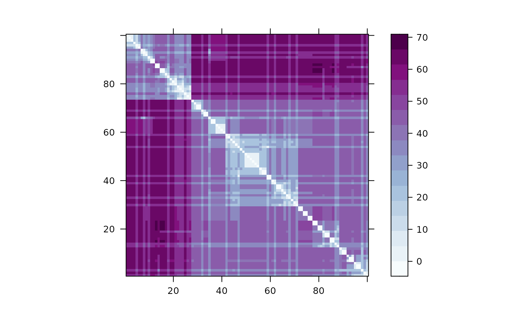

Decoding_a_Single_Locus.RmdIn order to demonstrate how to use to calculate and plot a local distance matrix \(d^{\ell}\), the package comes with an toy dataset of 100 simulated haplotypes, , stored as a \(L = 500\) by \(N=100\) .
require(kalis)
#> Loading required package: kalis
#>
#> Currently using SSE2, SSE4.1, AVX, AVX2, FMA and BMI2 CPU instruction sets.
data("SmallHaps")maintains a special cache for loading a haplotype dataset (see next section for details). Since is designed for much larger datasets than this toy example that we would often never want load into , haplotypes can be imported directly into the cache using . can only cache and operate on one haplotype dataset at a time. Currently, requires that the haplotypes be stored in our custom HDF5 format. In the following section we provide simple instructions for converting common file formats like VCFs and HAP/SAMPLE/LEGEND generated by SHAPEIT2 to our HDF5 format. However, if the haplotypes are loaded into a , we can easily write them out to our HDF5 format using and then cache them.
WriteIndividualHaplotypeH5("SmallHaps.h5",SmallHaps)
#> Creating HDF5 file ...
#> Writing 100 haplotype(s) of size 500 ...
CacheAllHaplotypesH5("SmallHaps.h5")
#> Cache loaded: 100 haplotypes of length 500 (consuming 0.000015 GB RAM)From we can inspect the haplotype cache to ensure that the data has loaded correctly using . With the haplotypes loaded, next we must specify our model parameters. First we supply a recombination map, \(m\), where \(m^\ell\) is the distance between locus \(\ell\) and \(\ell + 1\) in Morgans. Here we randomly generate a recombination map and set the remaining parameters to their default values.
Next we must initialize a forward table object with our parameters that will start at locus \(0\) and a backward table object that will start at the locus \(L+1\). We then use the function to propagate the forward table using parameters to target locus \(250\). We do the same with the backward table using the function. Note that and do not return anything, the tables and are updated in place.
fwd <- MakeForwardTable(pars)
bck <- MakeBackwardTable(pars)
Forward(fwd, pars, 250)
Backward(bck, pars, 250)Now that and are at the same locus, they can be combined to obtain \(p^\ell\) or \(d^\ell\) as follows.
The distance matrix can be easily clustered and visualized just by calling
